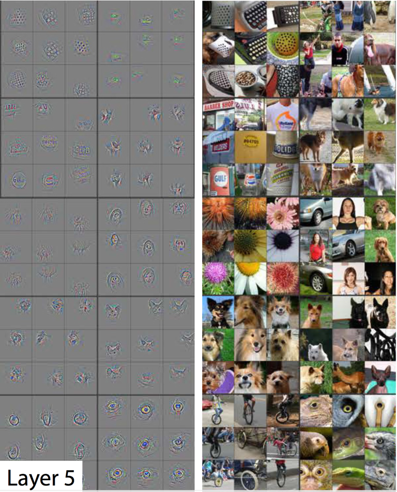

cnn卷积网络到底在找什么
2016-04-01
前言
虽然神经网络近年来取得了巨大的成功,但神经网络的隐藏层却一直被视为”黑盒”一样的存在,这造成了外界对神经网络的各种误解,所以近两年学界对隐藏层的探索做了大量的工作。对于cnn卷积网络而言,从2013年的Visualizing and Understanding Convolutional Networks开始，人们对卷积网络的可视化和理解进行了很多实验，开发了很多工具。而作为机器学习工程师，只有理解了隐藏层的作用才能更好的设计网络的架构。
1. CNN卷积层可视化
本部分内容参考Zeiler 和 Fergus的论文和CS231N内容
 上图是ALexNet的第一层原生weight(96x55x55)的直接可视化，每一个单元格都代表了一个卷积核(55x55)，可以从上图中看出每一个卷积核都在寻找一个小的简单的结构,包括不同角度的线，不通位置的圆和不同的色块等等
上图是ALexNet的第一层原生weight(96x55x55)的直接可视化，每一个单元格都代表了一个卷积核(55x55)，可以从上图中看出每一个卷积核都在寻找一个小的简单的结构,包括不同角度的线，不通位置的圆和不同的色块等等
我们也可以直接把第二三四等层的卷积核如上图一样直接可视化,但是这些原生的weight或者filter是难以理解和解释的,因此人们想出了很多方法通过其他途径去观察这些隐藏层,最简单的做法就是让不同的图片通过一个训练好的模型的卷积层，观察其变化,以此探索这些卷积层在寻找什么.有一个类似该方法的交互性的工作，视频和网址
1.1 layer1
上图的每个格子同样代表一个卷积核,对于第一行第一列的格子可以粗略看出一条-45度直线,事实上这个格子的卷积核寻找的正是-45度左右的线条，它会对如下图片产生激活反应:
 对于第三行第三列的格子而言，它寻找的是类似下图的色块
对于第三行第三列的格子而言，它寻找的是类似下图的色块
 所以总体来说对于一个训练好的模型来说，它的第一层总是在寻找这些简单的结构,不管是AleNet,ResNet还是DenseNet
所以总体来说对于一个训练好的模型来说，它的第一层总是在寻找这些简单的结构,不管是AleNet,ResNet还是DenseNet
1.2 layer2
 可以看到输入相应图片后，网络激活输出了稍复杂的纹理结构,比如条纹(第一行),嵌套的圆环(第二行右面),色块等等。
可以看到输入相应图片后，网络激活输出了稍复杂的纹理结构,比如条纹(第一行),嵌套的圆环(第二行右面),色块等等。
1.3 layer3
 第三层输出了第二层的组合，比如蜂巢，人,门窗和文字的轮廓
第三层输出了第二层的组合，比如蜂巢，人,门窗和文字的轮廓
1.4 layer4
 第四层，我们开始得到一些真实物品形状的东西，例如狗,准确说是狗的抽象形状
第四层，我们开始得到一些真实物品形状的东西，例如狗,准确说是狗的抽象形状
1.5 layer5
 第五层，我们得到一些更高层次的抽象，比如右边第8行4列穿红衣服的女人，输出的是人脸部分，因为对于分类来说，神经网络使用人脸来区分图像是不是表示一个人,所以它只关心人脸部分
而这些激活是CNN自己学会的，或者说当我们定义相应loss函数,并用反向传播倒逼其收敛之后，cnn会自动